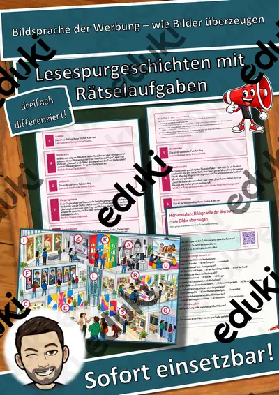
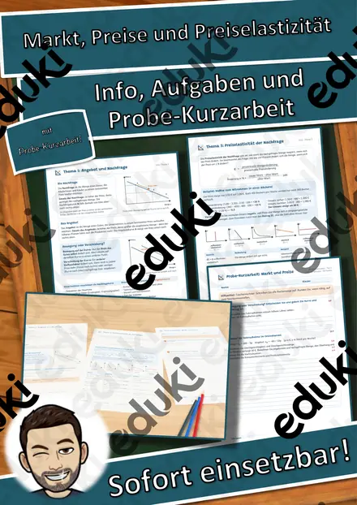

Geld und Konsum: Arbeitsblätter für Klasse 2–10 (Sachunterricht)
Der Umgang mit Geld gehört zur Verbraucherbildung. Kinder lernen Taschengeld und Preise kennen, Jugendliche Konsum, Werbung, Schulden und Zahlungsmittel.
Als roter Faden eignen sich Taschengeld, Preisvergleich und Sparen; Werbung, Schulden und Inflation lassen sich je nach Klassenstufe zuschalten.
Wo genau im Lehrplan das Thema steht, unterscheidet sich von Land zu Land, häufig im Fach Sachunterricht in den Klassen 2 bis 10. Gemeinsames Ziel: die Schülerinnen und Schüler planen ein Budget und erkennen Werbetricks.
Ob Vertretungsstunde, Stationenarbeit oder Hausaufgabe: Die Arbeitsblätter zu Geld und Konsum lassen sich flexibel einsetzen, etwa mit Taschengeld als Auftakt und Inflation als Abschluss. Musterlösungen sparen die Korrekturzeit. Zur Differenzierung eignen sich die Lesespurgeschichten mit ihren drei Niveaustufen.
18 passende Materialien stehen bereit, etwa Rechenmosaik Eisbecher und Eistüte: Rechnen mit, Markt, Preise und Preiselastizität und Die Schuldenfalle. Vertreten sind 7 Lesespurgeschichten, 4 Prüfungstrainings und 5 Lückentexte mit Hörverstehen; die Stufen reichen über Klasse 3–10. Ein Haushaltsbuch über zwei Wochen mit gespielten Einnahmen schafft einen praktischen Zugang.
Das gehört zum Thema
Passende Arbeitsblätter und Materialpakete

Die Schuldenfalle – Ratenkauf, Handyvertrag und Zahlpause – Lesespurgeschichte mit Rätselaufgaben (Klasse 9)

Online einkaufen – Widerrufsrecht, Fake-Shops und Rabattfallen – Lesespurgeschichte mit Rätselaufgaben (Klasse 8)

Markt und Preis – Angebot und Nachfrage am Christbaummarkt – Lesespurgeschichte mit Rätselaufgaben (Klasse 9)

Werbung erkennen – wie sie wirkt und was dahintersteckt – Lesespurgeschichte mit Rätselaufgaben (Klasse 8)

Taschengeld – mein Geld klug einteilen – Lesespurgeschichte mit Rätselaufgaben (Klasse 3)

Musik und Werbung – Jingle, Slogan, Klanglogo – Lesespurgeschichte mit Rätselaufgaben (Klasse 10)

Bildsprache der Werbung – wie Bilder überzeugen – Lesespurgeschichte mit Rätselaufgaben (Klasse 10)

Die Inflation – Prüfungstraining Wirtschaft (Klasse 9)

Der Wirtschaftskreislauf – Prüfungstraining Wirtschaft (Klasse 9)

Geld und Zahlungsverkehr – Prüfungstraining Wirtschaft (Klasse 9)

Konsum und Werbung – Prüfungstraining Wirtschaft (Klasse 8)

Werbung Lückentext mit Wortspeicher Hörverstehen und Suchsel

Taschengeld Lückentext mit Wortspeicher Hörverstehen und Suchsel

Inflation Lückentext mit Wortspeicher Hörverstehen und Suchsel

Geld Lückentext mit Wortspeicher Hörverstehen und Suchsel

Bank Lückentext mit Wortspeicher Hörverstehen und Suchsel

Rechenmosaik Eisbecher und Eistüte: Rechnen mit Geld – lösen, kleben, ausmalen in 3 Stufen (Klasse 3–4)

Markt, Preise und Preiselastizität – Angebot, Nachfrage, Gleichgewicht und Elastizität mit Probe-Kurzarbeit (Berufsschule)
Häufige Fragen
Für welche Klassenstufe passen die Arbeitsblätter zu Geld und Konsum?
Passend sind Klasse 3–10. Von den 18 Titeln wenden sich die meisten an Klasse 9, einige lassen sich differenzierend auch in benachbarten Stufen nutzen.
Welche Inhalte decken die Materialien zu Geld und Konsum ab?
Inhaltlich reicht die Auswahl von Taschengeld über Preisvergleich und Sparen bis zu Schulden; Details stehen bei den einzelnen Materialien.
Wie setze ich Geld und Konsum im Unterricht ein?
Beginnen Sie mit einem Einstieg zu Taschengeld und ergänzen Sie nach Bedarf. Ein Haushaltsbuch über zwei Wochen mit gespielten Einnahmen schafft einen praktischen Zugang.
Mehr Material nach Fach und Klasse
- Alle Materialien Wirtschaft
- Arbeitsblätter Wirtschaft Klasse 9
- Arbeitsblätter Wirtschaft Klasse 10
- Unterrichtsmaterial Klasse 2
- Unterrichtsmaterial Klasse 3
- Unterrichtsmaterial Klasse 4
- Unterrichtsmaterial Klasse 5
- Unterrichtsmaterial Klasse 6
- Unterrichtsmaterial Klasse 7
- Unterrichtsmaterial Klasse 8
- Unterrichtsmaterial Klasse 9
- Unterrichtsmaterial Klasse 10
Verwandte Lehrplanthemen
- Bauernhof und Nutztiere (Sachunterricht, Klasse 1–4)
- Berufe und Berufswahl (Sachunterricht, Klasse 1–10)
- Dinosaurier und Urzeit (Sachunterricht, Klasse 1–5)
- Gesunde Ernährung (Sachunterricht, Klasse 1–8)
- Halloween (Sachunterricht, Klasse 2–6)